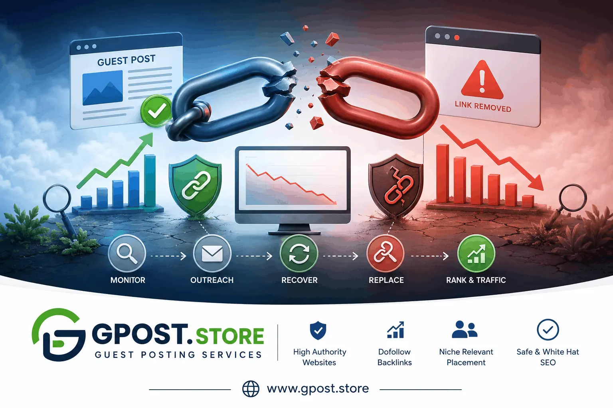

Guest post link decay: Why Backlinks Disappear and How to Prevent SEO Loss
Guest post link decay is one of the most overlooked problems in modern SEO. Many website owners invest time, money, and outreach effort into guest blogging campaigns, only to discover months later that their backlinks disappear, lose authority, become nofollow, or stop helping rankings entirely.
In 2026, backlinks are still a major Google ranking factor, but the quality and stability of those backlinks matter more than ever. A guest post backlink that disappears after six months can slowly damage your SEO momentum without obvious warning signs. This is why understanding link preservation, backlink monitoring, and expired backlink recovery strategies has become essential for SEO professionals, affiliate marketers, bloggers, SaaS founders, and agency owners.
This complete guide explains everything about Guest post link decay, including why guest post backlinks disappear, how link decay after guest posting impacts rankings, how to detect link loss, and the best expired backlinks SEO strategy to maintain long-term authority.

Understanding backlink decay helps protect long-term SEO rankings.
What Is Guest post link decay?
Guest post link decay refers to the gradual loss of SEO value from backlinks earned through guest posting campaigns. This usually happens when guest post links are removed, pages get deleted, domains expire, links become nofollow, articles lose indexing power, or websites stop updating content.
In simple words, a backlink that once helped your rankings slowly loses its power over time.
Short Snippet Answer
Guest post link decay happens when backlinks from guest posts lose SEO value due to deletion, deindexing, domain expiration, content updates, or declining authority of the referring website.
Why Guest Post Backlinks Matter
Guest posting remains one of the strongest white-hat link building methods because it helps:
- Increase domain authority
- Improve keyword rankings
- Drive referral traffic
- Build brand visibility
- Create niche relevance
- Support topical authority
- Improve Google trust signals
However, many marketers only focus on acquiring backlinks and completely ignore backlink retention.
This is where link decay becomes dangerous.
Why Guest Post Backlinks Disappear
Many beginners assume backlinks stay permanent forever. In reality, backlinks disappear all the time.
Common Reasons Why Guest Post Backlinks Disappear
- Website owner deletes old content
- Blog shuts down completely
- Domain expires
- Website gets penalized
- Content redesign removes links
- Editor changes outbound links
- Guest post marked sponsored or nofollow
- Page loses Google indexing
- Website changes niche direction
- SEO cleanup removes external links
This explains why guest post backlinks disappear even from websites that once looked trustworthy. Many SEO professionals use Competitor Backlink Spying Strategy techniques to identify lost backlinks and recover valuable link opportunities before rankings decline further.
How Link Decay After Guest Posting Affects SEO
Link decay after guest posting can slowly weaken your entire backlink profile.
Major SEO Impacts
- Keyword ranking drops
- Lower organic traffic
- Reduced domain authority
- Loss of topical relevance
- Weaker page authority
- Reduced trust signals
- Slower indexing performance
Many website owners blame Google updates for ranking losses when the real problem is backlink decay.
Understanding Link Decay in Backlink Profile
Link decay in backlink profile means your overall backlink strength weakens over time because old links disappear faster than new quality links are added.
This creates an unstable SEO foundation.
Signs of Link Decay in Backlink Profile
- Gradual traffic decline
- Fewer referring domains
- Lost backlinks in Ahrefs or Semrush
- Pages losing ranking positions
- Reduced crawl frequency
- Lower authority metrics
Types of Guest post link decay
1. Direct Link Removal
The website owner removes your backlink manually.
2. Full Content Deletion
The entire guest post gets deleted.
3. Nofollow Conversion
Your dofollow backlink becomes nofollow.
4. Domain Expiration
The referring website shuts down or expires.
5. Index Loss
The article still exists but Google no longer indexes it.
6. Authority Decay
The website loses trust and authority over time.
Why High DA Links Sometimes Fail
One hidden SEO reality is that high DA websites do not always produce strong ranking improvements.
Reasons High DA Guest Posts Fail
- Poor topical relevance
- Spam outbound links
- Low traffic pages
- Thin content
- Weak contextual placement
- Low engagement metrics
Topical relevance often matters more than raw authority.
How to Prevent Guest post link decay
Focus on Real Websites
Avoid private blog networks and spammy link farms.
Choose Active Blogs
Target websites with:
- Consistent publishing
- Real organic traffic
- Social engagement
- Strong topical focus
Build Relationships
Website owners are less likely to remove links when real relationships exist. Strong Guest Posting Outreach campaigns usually achieve better backlink retention because editors trust contributors they know personally.
Use Natural Anchor Text
Over-optimized anchors increase removal risk.
Monitor Links Regularly
Use backlink monitoring tools every month.
Best Tools for Monitoring Lost Backlinks
- Ahrefs
- Semrush
- Google Search Console
- Majestic
- Moz Pro
- Linkody
Expired Backlinks SEO Strategy
An expired backlinks SEO strategy focuses on recovering or replacing lost backlinks before rankings decline.
Smart Recovery Strategies
- Re-contact website owners
- Request backlink restoration
- Replace broken destination URLs
- Redirect removed pages properly
- Build replacement backlinks
- Strengthen internal linking
How to Find Guest Posting Opportunities
Google Search Operators
- "write for us" + your niche
- "guest post guidelines"
- "submit guest post"
- "become a contributor"
Competitor Backlink Analysis
Study competitor backlinks using SEO tools.
Social Media Outreach
Connect with bloggers on LinkedIn, X, and Facebook.
Email Outreach
Personalized outreach still works better than mass automation.
Step-by-Step Guest Posting Strategy
Step 1: Research Relevant Websites
Choose websites related to your niche.
Step 2: Analyze Website Quality
- Traffic quality
- Spam score
- Content quality
- Backlink profile
Step 3: Send Personalized Outreach
Focus on value, not just backlinks.
Step 4: Write Helpful Content
Create original, expert-level articles. Strong Content Writing for Guest Posts increases acceptance rates and helps backlinks survive longer because editors prefer high-value evergreen content.
Step 5: Use Natural Link Placement
Contextual links work best.
Step 6: Monitor Link Status
Track your backlinks monthly.
Common Guest Posting Mistakes
Buying Spam Links
Cheap backlinks often disappear quickly.
Ignoring Topical Relevance
Random backlinks rarely help long-term SEO.
Using Exact Match Anchors Everywhere
This increases Google penalty risks.
Focusing Only on DA Metrics
Traffic relevance matters more.
Not Tracking Link Loss
Most websites lose backlinks silently.
Advanced SEO Reality: Outreach Reply Rates Decline Over Time
Many SEO professionals notice outreach response rates suddenly drop.
Why This Happens
- Bloggers receive too many pitches
- AI-generated outreach increased spam
- Generic templates reduce trust
- Editors prioritize relationships
Personalized human outreach now performs better than mass outreach systems.
Myth vs Reality in Guest Posting SEO
Myth: More Backlinks Always Improve Rankings
Reality: Low-quality backlinks can weaken trust.
Myth: DA Is Everything
Reality: Relevance and traffic often matter more.
Myth: Guest Posting Is Dead
Reality: High-quality guest blogging still works very well.
Myth: All Dofollow Links Pass Equal Value
Reality: Placement, context, and relevance matter heavily.
Advanced Link Velocity Management
Experienced SEO professionals carefully manage backlink growth speed.
Why Link Velocity Matters
- Unnatural spikes may trigger scrutiny
- Consistent growth appears natural
- Balanced acquisition improves trust
Safe Link Velocity Tips
- Scale gradually
- Mix backlink types
- Maintain content publishing consistency
- Focus on topical authority
Topical Relevance vs Authority
One highly overlooked SEO insight is that niche relevance often beats raw authority.
Example
A backlink from a small but highly relevant SEO blog may outperform a backlink from a large generic news website.
This is because Google increasingly understands topical relationships and entity relevance.
AI and Guest Posting in 2026
AI has changed outreach and content production dramatically.
Benefits of AI
- Faster prospecting
- Topic generation
- Content outlines
- Email personalization assistance
Risks of AI
- Generic content footprints
- Spam outreach patterns
- Low editorial trust
- Reduced originality
Human editing remains essential.
Is Guest Posting Still Worth It in 2026?
Yes, but only when done correctly.
Modern guest posting is less about quantity and more about:
- Authority
- Relevance
- Trust
- Brand signals
- Topical depth
High-quality guest blogging still helps rankings, referral traffic, and brand authority.
When to Avoid Guest Posting
Avoid Spam Networks
Mass guest posting farms create risks.
Avoid Irrelevant Niches
Random backlinks provide weak SEO value.
Avoid Cheap Bulk Services
Low-cost backlink packages often disappear quickly.
Avoid Over-Optimization
Too many exact-match anchors can trigger penalties.
How Google Evaluates Guest Post Backlinks
Google analyzes:
- Content quality
- Topical relevance
- Editorial context
- Anchor text patterns
- User engagement
- Website trust
- Link placement
This is why contextual, editorially relevant links perform best.
SEO Safety Guidelines
- Focus on quality over quantity
- Build relationships, not just backlinks
- Avoid manipulative anchor text
- Monitor backlink health regularly
- Publish useful content consistently
- Diversify backlink sources
FAQs
What is guest post link decay?
Guest post link decay is the gradual loss of SEO value from backlinks over time due to content updates, removed pages, or declining domain authority.
What does link decay mean in SEO?
Link decay in SEO refers to weakening backlink power when guest post pages lose rankings, get deindexed, or when linking sites reduce authority and relevance signals.
What are the main causes of guest post link decay?
Main causes include page updates, broken URLs, nofollow changes, expired domains, and declining site authority, all reducing the SEO strength of guest post backlinks.
Guest post backlinks vs fresh backlinks – which is better?
Fresh backlinks usually deliver stronger SEO impact, while guest post links may decay over time. A balanced backlink profile ensures stable rankings and long-term authority.
How can I prevent guest post link decay?
You can prevent link decay by choosing high-authority sites, updating guest posts regularly, using contextual links, and monitoring backlinks through SEO tools consistently.
What is the best SEO strategy to reduce link decay impact?
The best strategy includes link diversification, regular backlink audits, and replacing lost or weak guest post links with new high-quality backlinks for stable SEO growth.
How does guest post link decay affect Google rankings?
It reduces backlink equity, which weakens domain authority signals and can lead to ranking drops, lower visibility, and decreased organic traffic over time.
Which tools help track guest post link decay?
Tools like Ahrefs, SEMrush, and Google Search Console help monitor backlinks, detect lost links, and analyze domain authority changes to manage link decay effectively.
How does link decay impact long-term SEO authority?
Link decay gradually reduces backlink strength, lowering long-term SEO authority and trust signals if not managed through consistent link building and maintenance strategies.
Will Google updates increase guest post link decay in future?
Yes, future Google updates may increase link decay for low-quality guest posts while rewarding high-quality, relevant, and natural backlinks that provide real value.
Conclusion
Guest post link decay is a real SEO challenge that many website owners ignore until rankings start falling. Backlinks naturally disappear over time because websites change, domains expire, content gets removed, and editorial policies evolve.
The best long-term SEO strategy is not simply building more backlinks. It is building sustainable, relevant, trustworthy backlinks while actively monitoring and protecting your backlink profile.
Focus on relationship-based outreach, topical relevance, content quality, and consistent backlink maintenance. When done correctly, guest posting remains one of the most powerful SEO strategies available in 2026.
To learn more advanced outreach and backlink strategies, visit guest posting services.